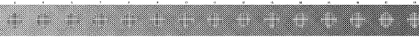
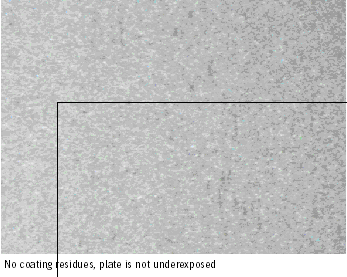
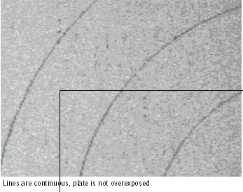
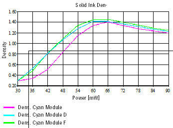

Значения мощности и при необходимости скорости барабана будут определены здесь.
Следующие значения установлены во вкладке «Испытание мощности»:
Диапазон мощности: предлагается Material Wizard и должен покрывать весь регулируемый диапазон мощности модулей, если это возможно.
|
|
Начните тест на мощность, нажав кнопку «Начать тест на мощность». |
Определить значение мощности для известных печатных пластин следующим образом:
Визуально оцените патч «Шкала выравнивания мощности». Отметьте значение шкалы, указанное в поле «Power Test Match Field» в списке выпуска материала для выпущенной пластины.
Теперь отметьте для каждого модуля тест-полоску, где внутренний алмаз визуально сливается с фоном для отмеченного масштабного пластыря. Когда тест-полоска, отвечающая этому критерию, не найдена, необходимо адаптировать скорость барабана и повторить тест.

Введите номер заданной тест-полоски в полях "A - F" во вкладке "Оценка проверки мощности" и нажмите "Применить". Данные о мощности отправляются в съёмочный аппарат.
Для оценки теста на неизвестные пластины, сильно изменяющиеся условия разработки или отсутствующие данные в поле «Power Test Match Field», выполните следующее:
Оценка тест-полосы происходит по двум критериям на модуль:




Вы должны выбрать рабочую точку, чтобы иметь как можно более оптимальное разрешение, избегая при этом линии волос.
Главным критерием является отсутствие волос. Это означает, что вы должны стремиться к запасу прочности, по крайней мере, на 20% меньше мощности, чем та, при которой можно увидеть остатки покрытия или линии волос.
Введите номер полосы с наибольшим значением мощности во всех коробках «A - F» во вкладке «Оценка проверки мощности» и нажмите «Применить». Данные о мощности отправляются в съёмочный аппарат.
Испытательные полосы, определяемые как имеющие самые высокие значения мощности модулей:
A = 9; B = 10; C = 9; D = 8; E = 9; F = 9
В этом примере введите '10' в поле "A - F" во вкладке "Оценка проверки мощности".
Для оценки теста на неизвестные отрицательные пластины, сильно изменяющиеся условия разработки или отсутствующие данные в поле «Power Test Match Field», выполните следующее:
Используйте денситометр отражения для измерения абсолютных значений плотности твердых патчей на модуль на каждой тестовой полосе мощности и запишите их на графике по отношению к мощности.

Определите мощность, где плотность каждого модуля самая высокая. Рабочая точка мощности на 10% выше этого значения (для компенсации вариаций процесса). В приведенном выше примере вам нужно будет установить мощность до 72 мВт.
Введите номер модуля с наибольшим значением мощности в поле «Текущая мощность» на вкладке «Оценка испытания мощности».
Определенные значения мощности модулей:
Модуль с наибольшим значением мощности — модуль B со значением 8, равным мощности 72 мВт.
Введите номер тест-полоски с наибольшим значением мощности в графах "А - F" во вкладке "Оценка теста мощности" и нажмите "Применить". Данные о мощности отправляются в съёмочный аппарат.
Рабочие пункты, указанные в перечне выпуска материалов, являются обязательными для пластин, не содержащих химикатов; подробная инструкция по работе для каждой отдельной пластины выходит за рамки настоящего документа.
На этом этапе вы должны запустить System Wizard, чтобы оптимизировать выравнивание геометрических модулей при вводе в эксплуатацию Suprasetter или после установки лазерных модулей.
Copyright © 2016 Heidelberger Druckmaschinen AG